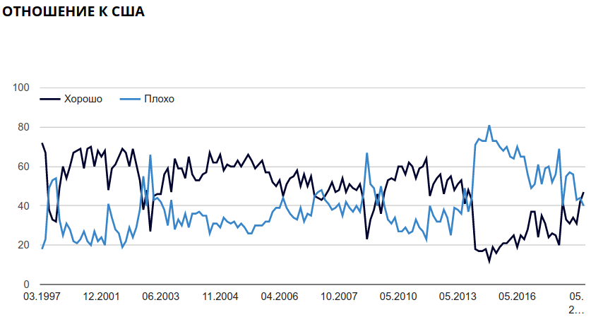

library(tidyverse)6 Работа со временем
Переменные бывают разные, и о них можно думать как о шкале:
Кажется, что время — просто обычная числовая переменная, на которой определены все обычные операции сложения вычитания и т. п. Однако стоит держать в голове несколько фактов:
- Не каждый год содержит 365 дней. Существуют високосные года.
- Не каждый день содержит 24 часа. Во многих странах используют переход на летнее и зимнее время.
- Не в каждой минуте 60 секунд. Существуют дополнительная секунда, которую добавляют чтобы компенсировать замедление во вращении земли (тогда после секунды 23:59:59 идет секунда 23:59:60).
Данные расхождения с ожиданиями связаны с двумя возможными определениями суток:
- период времени, за который Земля совершает оборот вокруг своей оси;
- период времени, равный 86 400 секундами.
Так как секунду в какой-то момент определили без привязки к вращению Земли, ученым приходится переодически подкручивать время, добавляя високосные секунды.
Все это мелочи учтены в пакете lubridate, созданном для работы со временем в R (https://rawgit.com/rstudio/cheatsheets/master/lubridate.pdf, туториал доступен здесь и по команде vignette("lubridate")). Первые команды, которые нужно изучить это today() и now():
library(lubridate)
today()[1] "2024-08-01"now()[1] "2024-08-01 20:45:31 MSK"Как видно из этих функций в R можно работать как с датами, так и со временем. В качестве иллюстрации мы будем использовать датасет flights из пакета nycflights13, в котором содержатся данные полетов из Нью Йорка в 2013 году.
library(nycflights13)
flights# A tibble: 336,776 × 19
year month day dep_time sched_dep_time dep_delay arr_time sched_arr_time
<int> <int> <int> <int> <int> <dbl> <int> <int>
1 2013 1 1 517 515 2 830 819
2 2013 1 1 533 529 4 850 830
3 2013 1 1 542 540 2 923 850
4 2013 1 1 544 545 -1 1004 1022
5 2013 1 1 554 600 -6 812 837
6 2013 1 1 554 558 -4 740 728
7 2013 1 1 555 600 -5 913 854
8 2013 1 1 557 600 -3 709 723
9 2013 1 1 557 600 -3 838 846
10 2013 1 1 558 600 -2 753 745
# ℹ 336,766 more rows
# ℹ 11 more variables: arr_delay <dbl>, carrier <chr>, flight <int>,
# tailnum <chr>, origin <chr>, dest <chr>, air_time <dbl>, distance <dbl>,
# hour <dbl>, minute <dbl>, time_hour <dttm>6.1 Создание даты
Самый простой способ получить дату — это преобразовать строку в формат даты, для этого надо просто упорядочить y (year), m (month) и d (day) в команде:
ymd("2020-01-21")[1] "2020-01-21"ymd("20-01-21")[1] "2020-01-21"ymd("20.01.21")[1] "2020-01-21"ymd("20/01/21")[1] "2020-01-21"ymd("200121")[1] "2020-01-21"mdy("January 21st, 2020")[1] "2020-01-21"dmy("21-Jan-2020")[1] "2020-01-21"Команды понимают не только английский (хоть и с трудом):
dmy("21 янв 2020", locale = "ru_RU.UTF-8")[1] "2020-01-21"dmy("21 янв. 2020", locale = "ru_RU.UTF-8")[1] "2020-01-21"dmy("21 ян 2020", locale = "ru_RU.UTF-8")Warning: All formats failed to parse. No formats found.[1] NAdmy("21 янва 2020", locale = "ru_RU.UTF-8")[1] "2020-01-21"dmy("21 января 2020", locale = "ru_RU.UTF-8")Warning: 1 failed to parse.[1] NAdmy("21 январь 2020", locale = "ru_RU.UTF-8")[1] "2020-01-21"dmy("21 Январь 2020", locale = "ru_RU.UTF-8")[1] "2020-01-21"Аналогично сделаны команды состоящие из h, m, s:
hms("20:01:02")[1] "20H 1M 2S"hm("20.01")[1] "20H 1M 0S"ms("23:59")[1] "23M 59S"Также существует команда make_datetime(), которая позволяет сделать дату из нескольких переменных:
flights |>
mutate(departure = make_datetime(year, month, day, hour, minute)) |>
select(departure)# A tibble: 336,776 × 1
departure
<dttm>
1 2013-01-01 05:15:00
2 2013-01-01 05:29:00
3 2013-01-01 05:40:00
4 2013-01-01 05:45:00
5 2013-01-01 06:00:00
6 2013-01-01 05:58:00
7 2013-01-01 06:00:00
8 2013-01-01 06:00:00
9 2013-01-01 06:00:00
10 2013-01-01 06:00:00
# ℹ 336,766 more rows6.2 Работа с часовыми поясами
Земля разбита на условные географическо-административные зоны, в которых действуют свои правила работы со временем. В каких-то зонах есть переход на зимнее/летнее время, а где-то его нет. В некоторых точках Земли понятие часового пояса не имеет смысла, однако все равно есть конвенции того, какое время на этой территории использовать. Функция make_datetime(), которую мы рассмотрели, использует по-умолчанию всемирное координированное время (UTC). Обозначение интересующего часового пояса можно посмотреть в интернете, однако основная информации о возможных значениях аргумента tz хранится в системе пользователя.
dmy_hm("21-01-2001 15^43", tz = "Europe/Moscow")[1] "2001-01-21 15:43:00 MSK"dmy_hm("21-01-2001 15^43", tz = "America/Chicago")[1] "2001-01-21 15:43:00 CST"dmy_hm("21-01-2001 15^43", tz = "America/New_York")[1] "2001-01-21 15:43:00 EST"dmy_hm("21-01-2001 15^43", tz = "Africa/Cairo")[1] "2001-01-21 15:43:00 EET"6.3 Извлечение компонентов даты
Для извлечения компонентов даты используются функции year(), month(), week() (номер недели в году), mday() (day of the month), wday() (номер дня в неделе), yday() (номер дня в году), hour(), minute() и second():
date_example <- flights$time_hour[1]
date_example[1] "2013-01-01 05:00:00 EST"year(date_example)[1] 2013month(date_example)[1] 1month(date_example, label = TRUE)[1] Jan
12 Levels: Jan < Feb < Mar < Apr < May < Jun < Jul < Aug < Sep < ... < Decmonth(date_example, label = TRUE, abbr = FALSE)[1] January
12 Levels: January < February < March < April < May < June < ... < Decembermonth(date_example, label = TRUE, locale = "ru_RU.UTF-8")[1] янв
12 Levels: янв < фев < мар < апр < мая < июн < июл < авг < сен < ... < декweek(date_example)[1] 1mday(date_example)[1] 1wday(date_example)[1] 3wday(date_example, label = TRUE)[1] Tue
Levels: Sun < Mon < Tue < Wed < Thu < Fri < Satwday(date_example, label = TRUE, abbr = FALSE)[1] Tuesday
7 Levels: Sunday < Monday < Tuesday < Wednesday < Thursday < ... < Saturdaywday(date_example, label = TRUE, locale = "ru_RU.UTF-8")[1] Вт
Levels: Вс < Пн < Вт < Ср < Чт < Пт < Сбyday(date_example)[1] 1hour(date_example)[1] 5minute(date_example)[1] 0second(date_example)[1] 0Также есть функция leap_year(), которая сообщает, является ли выбранный год високосным:
leap_year(2019)[1] FALSEleap_year(2020)[1] TRUE6.4 Операции с датами
Если взять две даты, то можно узнать разницу между ними и т. п.:
ymd("2020-01-21") - ymd("2020-01-19")Time difference of 2 daysymd("2020-01-19") - ymd("2020-01-21")Time difference of -2 daysОбратите внимание на результат работы этого выражения:
hm("21:00") - hm("18:10")[1] "3H -10M 0S"Видимо, почему-то при таком использовании происходит поэлементная операция с часами, минутами, и секундами, так что в результате получаются отрицательные минуты. Однако, если использовать полные даты, то этого эффекта нет:
ymd_hm("2020-01-21, 21:00") - ymd_hm("2020-01-21, 18:10")Time difference of 2.833333 hoursymd_hm("2020-01-21, 21:00") - hm("18:10")[1] "2020-01-21 02:50:00 UTC"Также существует функция difftime(), которая позволяет настраивать единицы, в которых выдается результат:
difftime(ymd_hm("2020-01-21, 21:00"), ymd_hm("2020-01-21, 18:10"), units = "mins")Time difference of 170 minsdifftime(ymd_hm("2020-01-21, 21:00"), ymd_hm("2020-01-21, 18:10"), units = "hours")Time difference of 2.833333 hoursОднако простые даты не являются временными отрезками, так что их нельзя складывать, вычитать, умножать и т. д. Для удобства операций в lubridate вводится несколько сущностей:
- periods — промежутки времени, которые игнорируют нерегулярности во времени, сразу прибавляя 1 к соответствующему разряду, вводятся функциями
years(),months(),weeks(),days(),hours(),minutes(),seconds(),period() - duration — промежутки времени, которые учитывают нерегулярности во времени, добавляя стандартную длительность единицы, вводятся функциями
dyears(),dweeks(),ddays(),dhours(),dminutes(),dseconds(),duration()

Рассмотрим несколько сложных случаев:
- високосный год
ymd("2019-03-01")+years(1)[1] "2020-03-01"ymd("2019-03-01")+dyears(1)[1] "2020-02-29 06:00:00 UTC"- переход на летнее время
ymd_hms("2020-03-07 13:00:00", tz = "America/New_York") + days(1)[1] "2020-03-08 13:00:00 EDT"ymd_hms("2020-03-07 13:00:00", tz = "America/New_York") + ddays(1)[1] "2020-03-08 14:00:00 EDT"- переход на зимнее время
ymd_hms("2020-10-31 13:00:00", tz = "America/New_York") + days(1)[1] "2020-11-01 13:00:00 EST"ymd_hms("2020-10-31 13:00:00", tz = "America/New_York") + ddays(1)[1] "2020-11-01 12:00:00 EST"Последняя операция с датами, которую мы рассмотрим — округление:
floor_date()— округление в меньшую сторонуround_date()— математическое округлениеceiling_date()— округление в большую сторону

floor_date(ymd("2020-01-16"), unit = "month")[1] "2020-01-01"round_date(ymd("2020-01-16"), unit = "month")[1] "2020-01-01"round_date(ymd("2020-01-17"), unit = "month")[1] "2020-02-01"ceiling_date(ymd("2020-01-16"), unit = "month")[1] "2020-02-01"ceiling_date(ymd("2020-01-16"), unit = "year")[1] "2021-01-01"6.5 Визуализация времени: данные Левада-центра
Пакет tidyverse понимает переменные типа дата, и позволяет их фильтровать и визуализировать. Возьмем для примера датасет из проекта The Unwelcomed Мохамада А. Вэйкда (Mohamad A. Waked), содержащий информацию о месте и причинах смерти мигрантов и беженцев по всему миру с января 2014 года по июнь 2019 года.
unwelcomed <- read_csv("https://raw.githubusercontent.com/agricolamz/daR4hs/main/data/w6_death_of_migrants_and_refugees_from_the_Unwelcomed_project.csv")
unwelcomed |>
mutate(date = dmy(date)) |>
ggplot(aes(date, total_death_missing, color = collapsed_cause))+
geom_point()+
scale_y_log10()+
labs(y = "number of death/missing")Warning in scale_y_log10(): log-10 transformation introduced infinite values.unwelcomed |>
mutate(date = dmy(date)) |>
filter(date < dmy("1-1-2016")) |>
ggplot(aes(date, total_death_missing, color = collapsed_cause))+
geom_point()+
scale_y_log10()+
labs(y = "number of death/missing")Warning in scale_y_log10(): log-10 transformation introduced infinite values.
Однако к переменным со временем не всегда относятся аккуратно. Рассмотрим график с сайта Левада-центра — российской негосударственной исследовательской организации, которая проводит социологические и маркетинговые исследования (график взят отсюда):

На первый взгляд, в этом графике нет ничего странного, однако если присмотреться к динамической версии на сайте Левада-центра, можно обнаружить, что не идущие подряд значения расположены на одинаковом расстоянии друг от друга, например, 05.2014, 07.2014, 11.2014. Вот здесь можно скачать данные, по которым строился этот график. Вот как он выглядит, если считать временную переменную как время
levada <- read_csv("https://raw.githubusercontent.com/agricolamz/daR4hs/main/data/w6_2019.01_levada_countries.csv")
levada |>
mutate(date = str_c("1-", date),
date = dmy(date)) |>
filter(towards == "USA") |>
pivot_longer(names_to = "answer", values_to = "number", good:bad) |>
ggplot(aes(date, number, color = answer))+
geom_line()+
labs(x = "", y = "", caption = "данные Левада-центра")+
scale_y_continuous(limits = c(0, 100))+
theme(legend.position = c(0.1, 0.9), legend.title = element_blank())На графике теперь видно, насколько регулярно проводились опросы: в начале 90-ых опросы проводились реже, потом часто, потом в районе 2010 года был перерыв. График Левада-центра можно оправдать тем, что они представляют данные от замера к замеру, так что по оси x находится как бы категориальная переменная со значениями замер 05.2014, замер 07.2014, замер 11.2014 и т. д. Однако это совсем неочевидно из графика.